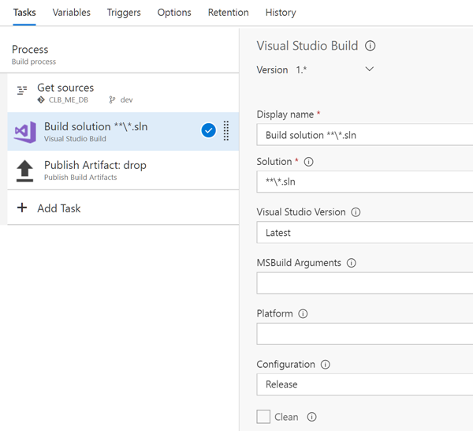
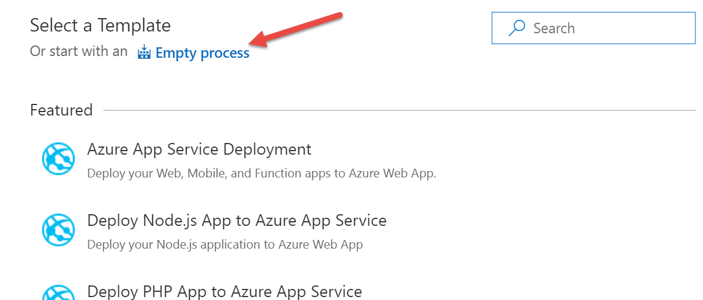
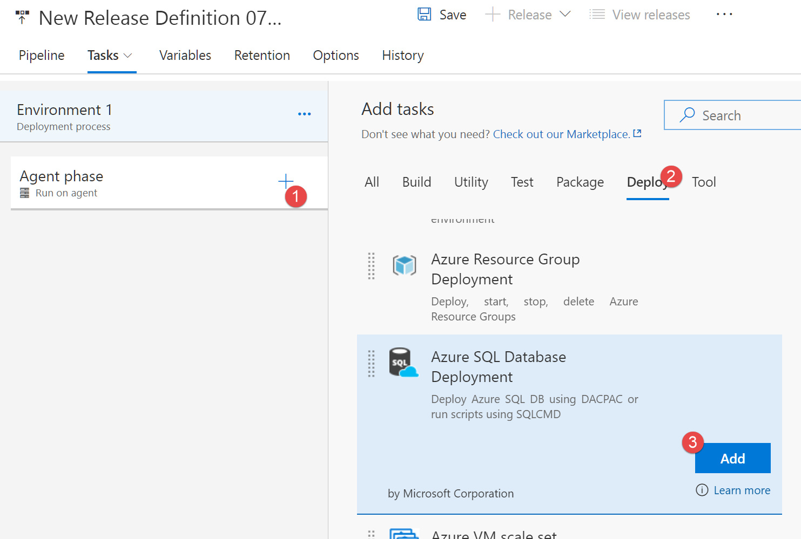
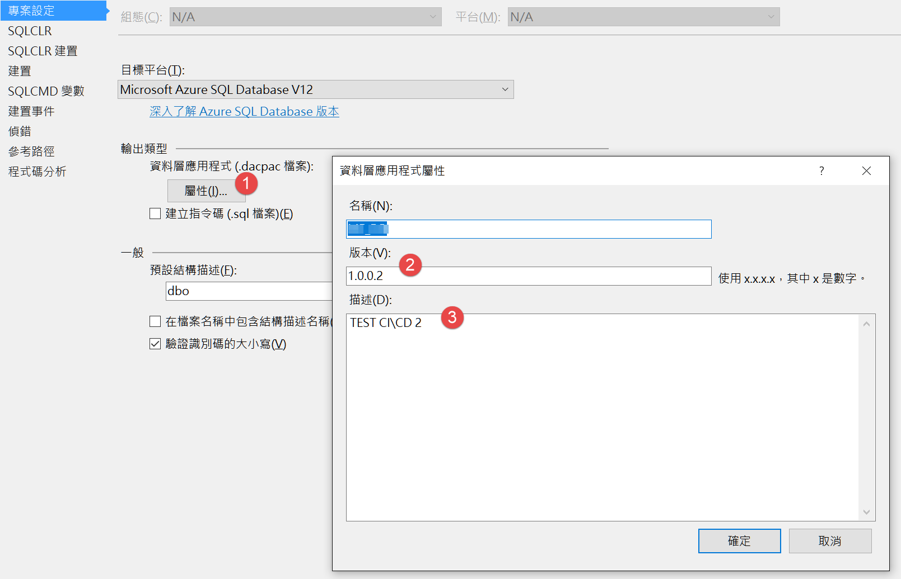
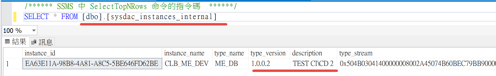

使用 VSTS 自動佈署，也可以佈署 database 專案
目前構想的建置流程是
1.先在 LocalDB 開發，
2.然後將 LocalDB Schema 佈署到 Database 專案
3.將專案同步到 VSTS git 上
4.VSTS 觸發自動建置與佈署
1,2,3 步驟就不多說了(資料庫專案屬性的目標平台要選擇 Azure SQL Database)，這篇主要講解第4步驟
建置很容易，如下圖

選擇 Build solution，然後把建置好的檔案(只需要 .dacpac 檔)發佈到共用容器
接著看佈署設定，因為沒有相關的 template 可以選，所以直接開一個空的

名字取一取，其他設定都不用動，然後新增 Azure SQL Database Deployment

特別說明其中幾個設定
- Azure Classic Subscription
就是 Azure 的訂閱帳號，不過這邊不能直接選，要自己增加 - Deployment Package
- Type: 選擇 SQL DACPAC File
- DACPAC File: 從容器 copy 過來的 .dacpac 檔案，
- Additional SqlPackage.exe Arguments: 輸入 /p:RegisterDataTierApplication=true /p:BlockWhenDriftDetected=true
特別說一下這兩個參數，他會將資料庫專案裡的版本資訊(如下圖)存到 MSSQL 的 sysdac_instances_internal 裡

在 MSSQL 可以看到

如此也達到版控的效果